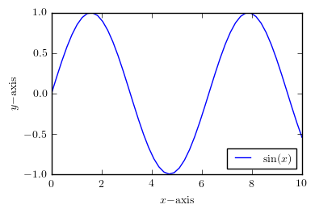

We can typeset code that is passed to Python, and bring back the results.
This can be simple. For example, print('Python says hi!') returns the following:
Python says hi!
Or we could access the printed content verbatim (it might contain special characters):
Python says hi!
Python interaction can also be more complex. print(str(2**2**2) + r'\endinput') returns 16. In this case, the printed result includes LaTeX code, which is correctly interpreted by LaTeX to ensure that there is not an extra space after the 16. Printed output is saved to a file and brought back in via \input, and the \endinput command stops input immediately, before LaTeX gets to the end of the line and inserts a space character there, after the 16.
Printing works, but as the last example demonstrates, you have to be careful about spacing if you have text immediately after the printed content. In that case, it’s usually best to assemble text within a PythonTeX environment and store the text in a variable. Then you can bring in the text later, using the \py command. The \py command brings in a string representation of its argument. First we create the text.
mytext = '$1 + 1 = {0}$'.format(1 + 1)Then we bring it in: \(1 + 1 = 2\). The \py command can even bring in verbatim content.
We don’t have to typeset the code we’re executing. It can be hidden. And then we can access it later: This is a message from Python.
It is also possible to perform variable substitution or string interpolation. The earlier result could be recreated: \(1 + 1 = 2\).
PythonTeX supports syntax highlighting via Pygments. Any language supported by Pygments can be highlighted. Unicode is supported. Consider this snippet copied and pasted from a Python 3 interactive session. (Using random strings of Unicode for variable names is probably not a good idea, but PythonTeX will happily highlight it for you.)
>>> âæéöø = 123
>>> ßçñðŠ = 456
>>> âæéöø + ßçñðŠ
579There is also a Pygments command for inline use: \pygment.
PythonTeX includes an environment that emulates a Python interactive session. Commands are entered within the environment, each line is treated as input to an interactive session, and the result is typeset.
>>> x = 123
>>> y = 345
>>> z = x + y
>>> z
468
>>> def f(expr):
... return(expr**4)
...
>>> f(x)
228886641
>>> print('Python says hi from the console!')
Python says hi from the console!It is possible to refer to the values of console variables later on in inline contexts, using the \pycon command. For example, the value of \(z\) was 468.
PythonTeX allows us to perform algebraic manipulations with SymPy and then properly typeset the results.
We create three variables, and define \(z\) in terms of the other two.
var('x, y, z')
z = x + yNow we can access what \(z\) is equal to:
\[z=x + y\]
Many things are possible, including some very nice calculus.
f = x**3 + cos(x)**5
g = Integral(f, x)\[\int \left(x^{3} + \cos^{5}{\left(x \right)}\right)\, dx=\frac{x^{4}}{4} + \frac{\sin^{5}{\left(x \right)}}{5} - \frac{2 \sin^{3}{\left(x \right)}}{3} + \sin{\left(x \right)}\]
It’s easy to use arbitrary symbols in equations.
phi = Symbol(r'\phi')
h = Integral(exp(-phi**2), (phi, 0, oo))\[\int\limits_{0}^{\infty} e^{- \phi^{2}}\, d\phi=\frac{\sqrt{\pi}}{2}\]
We can create plots with matplotlib, perfectly matching the plot fonts with the document fonts. No more searching for the code that created a figure!
It is possible to pass page dimensions and similar contextual information from the LaTeX side to the Python side. If you want your figures to be, for example, a particular fraction of the page width, you can pass the value of \textwidth to the Python side, and use it in creating your figures. See \setpythontexcontext in the main documentation for details.
You may want to use matplotlib’s PGF backend when creating plots.
rc('text', usetex=True)
rc('font', family='serif')
rc('font', size=10.0)
rc('legend', fontsize=10.0)
rc('font', weight='normal')
x = linspace(0, 10)
figure(figsize=(4, 2.5))
plot(x, sin(x), label='$\sin(x)$')
xlabel(r'$x\mathrm{-axis}$')
ylabel(r'$y\mathrm{-axis}$')
legend(loc='lower right')
savefig('myplot.png', bbox_inches='tight')
from scipy.integrate import quad
myintegral = quad(lambda x: e**-x**2, 0, inf)[0]\[\int_0^\infty e^{-x^2}\,dx = 0.886226925452758\]
PythonTeX allows some amazing document automation, such as this derivative and integral table. Try typing that by hand, fast!
from re import sub
var('x')
# Create a list of functions to include in the table
funcs = ['sin(x)', 'cos(x)', 'tan(x)',
'sin(x)**2', 'cos(x)**2', 'tan(x)**2',
'asin(x)', 'acos(x)', 'atan(x)',
'sinh(x)', 'cosh(x)', 'tanh(x)']
print(r'\begin{align*}')
for func in funcs:
# Put in some vertical space when switching to arc and hyperbolic funcs
if func == 'asin(x)' or func == 'sinh(x)':
print(r'&\\')
myderiv = 'Derivative(' + func + ', x)'
myint = 'Integral(' + func + ', x)'
print(latex(eval(myderiv)) + '&=' +
latex(eval(myderiv + '.doit()')) + r'\quad & \quad')
print(latex(eval(myint)) + '&=' +
latex(eval(myint+'.doit()')) + r'\\')
print(r'\end{align*}')\[\begin{aligned} \frac{d}{d x} \sin{\left(x \right)}&=\cos{\left(x \right)}\quad & \quad \int \sin{\left(x \right)}\, dx&=- \cos{\left(x \right)}\\ \frac{d}{d x} \cos{\left(x \right)}&=- \sin{\left(x \right)}\quad & \quad \int \cos{\left(x \right)}\, dx&=\sin{\left(x \right)}\\ \frac{d}{d x} \tan{\left(x \right)}&=\tan^{2}{\left(x \right)} + 1\quad & \quad \int \tan{\left(x \right)}\, dx&=- \log{\left(\cos{\left(x \right)} \right)}\\ \frac{d}{d x} \sin^{2}{\left(x \right)}&=2 \sin{\left(x \right)} \cos{\left(x \right)}\quad & \quad \int \sin^{2}{\left(x \right)}\, dx&=\frac{x}{2} - \frac{\sin{\left(x \right)} \cos{\left(x \right)}}{2}\\ \frac{d}{d x} \cos^{2}{\left(x \right)}&=- 2 \sin{\left(x \right)} \cos{\left(x \right)}\quad & \quad \int \cos^{2}{\left(x \right)}\, dx&=\frac{x}{2} + \frac{\sin{\left(x \right)} \cos{\left(x \right)}}{2}\\ \frac{d}{d x} \tan^{2}{\left(x \right)}&=\left(2 \tan^{2}{\left(x \right)} + 2\right) \tan{\left(x \right)}\quad & \quad \int \tan^{2}{\left(x \right)}\, dx&=- x + \frac{\sin{\left(x \right)}}{\cos{\left(x \right)}}\\ &\\ \frac{d}{d x} \operatorname{asin}{\left(x \right)}&=\frac{1}{\sqrt{1 - x^{2}}}\quad & \quad \int \operatorname{asin}{\left(x \right)}\, dx&=x \operatorname{asin}{\left(x \right)} + \sqrt{1 - x^{2}}\\ \frac{d}{d x} \operatorname{acos}{\left(x \right)}&=- \frac{1}{\sqrt{1 - x^{2}}}\quad & \quad \int \operatorname{acos}{\left(x \right)}\, dx&=x \operatorname{acos}{\left(x \right)} - \sqrt{1 - x^{2}}\\ \frac{d}{d x} \operatorname{atan}{\left(x \right)}&=\frac{1}{x^{2} + 1}\quad & \quad \int \operatorname{atan}{\left(x \right)}\, dx&=x \operatorname{atan}{\left(x \right)} - \frac{\log{\left(x^{2} + 1 \right)}}{2}\\ &\\ \frac{d}{d x} \sinh{\left(x \right)}&=\cosh{\left(x \right)}\quad & \quad \int \sinh{\left(x \right)}\, dx&=\cosh{\left(x \right)}\\ \frac{d}{d x} \cosh{\left(x \right)}&=\sinh{\left(x \right)}\quad & \quad \int \cosh{\left(x \right)}\, dx&=\sinh{\left(x \right)}\\ \frac{d}{d x} \tanh{\left(x \right)}&=1 - \tanh^{2}{\left(x \right)}\quad & \quad \int \tanh{\left(x \right)}\, dx&=x - \log{\left(\tanh{\left(x \right)} + 1 \right)}\\\end{aligned}\]
Using SymPy, it is possible to typeset step-by-step solutions. In this particular case, we also use the mdframed package to place a colored background behind our code.
x, y, z = symbols('x,y,z')
f = Symbol('f(x,y,z)')
# Define limits of integration
x_llim = 0
x_ulim = 2
y_llim = 0
y_ulim = 3
z_llim = 0
z_ulim = 4
print(r'\begin{align*}')
# Notice how I define f as a symbol, then later as an actual function
left = Integral(f, (x, x_llim, x_ulim), (y, y_llim, y_ulim), (z, z_llim, z_ulim))
f = x*y + y*sin(z) + cos(x+y)
right = Integral(f, (x, x_llim, x_ulim), (y, y_llim, y_ulim), (z, z_llim, z_ulim))
print(latex(left) + '&=' + latex(right) + r'\\')
# For each step, I move limits from an outer integral to an inner, evaluated
# integral until the outer integral is no longer needed
right = Integral(Integral(f, (z, z_llim, z_ulim)).doit(), (x, x_llim, x_ulim),
(y, y_llim, y_ulim))
print('&=' + latex(right) + r'\\')
right = Integral(Integral(f, (z, z_llim, z_ulim), (y, y_llim, y_ulim)).doit(),
(x, x_llim, x_ulim))
print('&=' + latex(right) + r'\\')
right = Integral(f, (z, z_llim, z_ulim), (y, y_llim, y_ulim),
(x, x_llim, x_ulim)).doit()
print('&=' + latex(right) + r'\\')
print('&=' + latex(N(right)) + r'\\')
print(r'\end{align*}')\[\begin{aligned} \int\limits_{0}^{4}\int\limits_{0}^{3}\int\limits_{0}^{2} f(x,y,z)\, dx\, dy\, dz&=\int\limits_{0}^{4}\int\limits_{0}^{3}\int\limits_{0}^{2} \left(x y + y \sin{\left(z \right)} + \cos{\left(x + y \right)}\right)\, dx\, dy\, dz\\ &=\int\limits_{0}^{3}\int\limits_{0}^{2} \left(4 x y - y \cos{\left(4 \right)} + y + 4 \cos{\left(x + y \right)}\right)\, dx\, dy\\ &=\int\limits_{0}^{2} \left(18 x - 4 \sin{\left(x \right)} + 4 \sin{\left(x + 3 \right)} - \frac{9 \cos{\left(4 \right)}}{2} + \frac{9}{2}\right)\, dx\\ &=4 \cos{\left(3 \right)} + 4 \cos{\left(2 \right)} - 4 \cos{\left(5 \right)} - 9 \cos{\left(4 \right)} + 41\\ &=40.1235865133293\\\end{aligned}\]
PythonTeX allows code to be typset next to the stderr it produces. This requires the package option makestderr.
x = 123
y = 345
z = x + y +This code causes a syntax error:
File "py_errorsession_9.py", line 3
z = x + y +
^
SyntaxError: invalid syntaxThe package option stderrfilename allows the file name that appears in the error message to be customized.
Since PythonTeX runs Python code (and potentially other code) on your computer, documents using PythonTeX have a greater potential for security risks than do standard LaTeX documents. You should only compile PythonTeX documents from sources you trust.↩︎